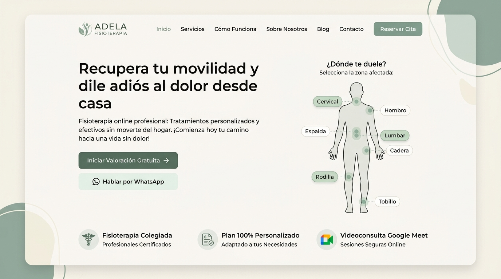
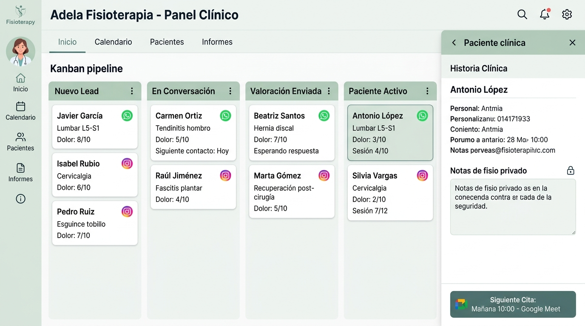
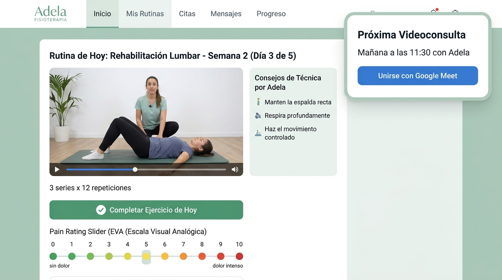

Adela Alventosa
Fisioterapia Online · Colegiada Nº 4.812
Solución clínica integral 100% digital: Web de captación con cuestionario anatómico, CRM omnicanal con IA para WhatsApp e Instagram, bandeja de conversaciones, informes de negocio y Portal privado para pacientes.
Logotipo Oficial & Paleta Bio-Clínica
Diseño minimalista en verde salvia (#2D5A43), arena cálido y pizarra neutro. Transmite rigor sanitario, confianza y calidez humana.
El Método Clínico de Adela (Estilo Excalidraw)
Combinación de estética hand-drawn tipo pizarra digital con físicas de rebote y micro-interacciones. Explica el tratamiento paso a paso para reducir la fricción del paciente escéptico.
Valoración & Meet
Cuestionario funcional y videollamada diagnóstica de 45 min con Adela.
Plan Personalizado
Pautas biomecánicas y vídeos grabados por Adela con tus ejercicios exactos.
Feedback Diario
Escala EVA diaria y ajuste continuo por WhatsApp con notas de voz de Adela.
Alta Terapéutica
Reevaluación final, consolidación de fuerza y prevención de recaídas.
Web Pública & Selector Anatómico Fijo
Landing con silueta médica realista, punto dinámico de localización de dolor (sin deformación de layout) y consentimiento legal explícito bajo el Art. 9 del RGPD y Ley 41/2002.

CRM Clínico & Pipeline Kanban
Gestión unificada de pacientes procedentes de WhatsApp e Instagram (vía webhook de Zernio) y la Web. Permite a Adela redactar la estrategia terapéutica privada antes de cada videoconsulta.

Conversaciones Omnicanal e Informes Clínicos
Dos nuevos submódulos dentro del CRM de Adela: bandeja centralizada de mensajes y panel ejecutivo de rendimiento.
Comentarios y Mensajes de Pacientes
Centraliza los chats que provienen de WhatsApp, mensajes directos de Instagram y el formulario de feedback del portal del paciente. Incluye plantillas rápidas de respuesta clínica y estados de lectura.
Cuadro de Mandos Clínico y Financiero
KPIs en tiempo real: Clientes activos (28), Total acumulado (142), Facturación mensual (3.240 €), Ratio de conversión (34,2%), Embudo omnicanal y seguimiento de dolor EVA medio (-4,8 pts).
Contestador Inteligente con ElevenLabs (Sofía)
Desvío automático cuando Adela está en consulta o videoconsulta. Informa de tarifas (45€ sesión, 59€/mes plan de rutinas, 89€ híbrido) y agenda citas sin perder pacientes.
Adela mantiene su número de siempre. Cuando está con las manos ocupadas tratando a un paciente, la llamada se desvía en 3 tonos hacia el agente de voz. Sofía responde con empatía sanitaria, resuelve dudas sobre tarifas y registra la reserva en su calendario con confirmación instantánea por WhatsApp.
Portal Privado Web y Móvil
Acceso instantáneo a sus vídeos de rehabilitación guiados por Adela, registro diario de dolor EVA (0–10) con envío directo al CRM, e inicio de videoconsulta de Google Meet en un clic.
